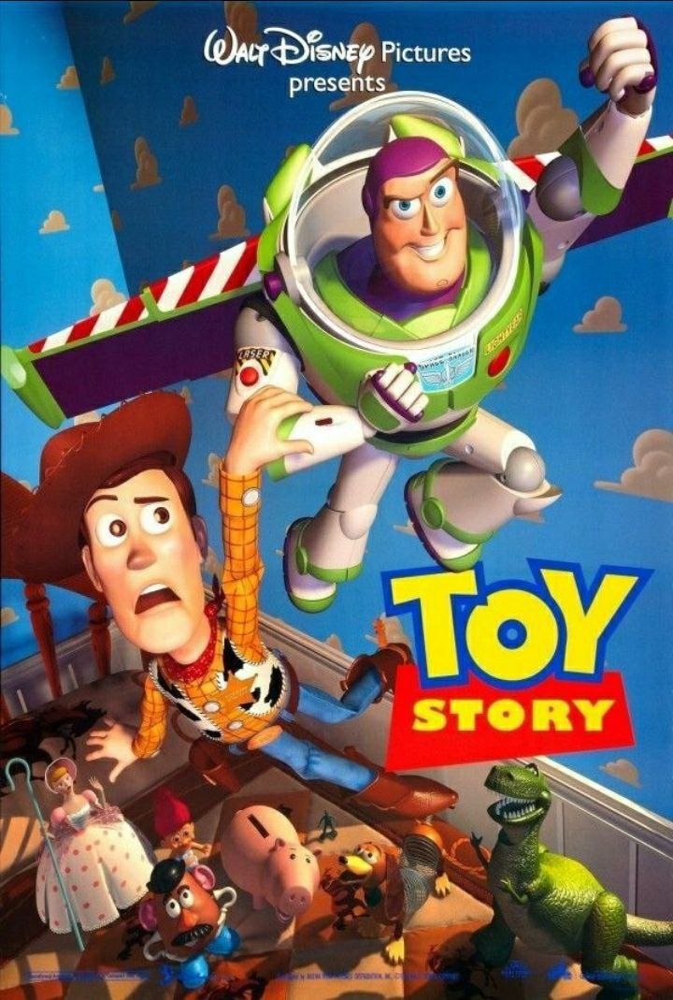
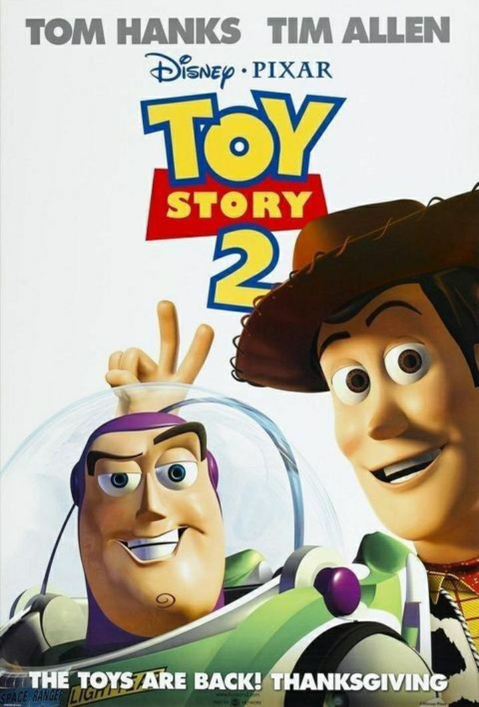
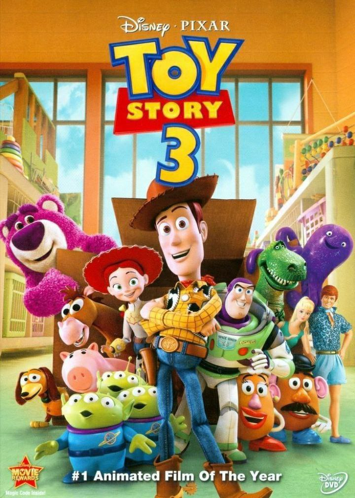

Toy Story 1 | |
|  |
Woody, mainan favorit Andy, khawatir jika setelah Andy menerima hadiah ulang tahunnya,yaitu mainan baru bernama Buzz, dia akan dilupakan. Lantas, ia pun membuat rencana untuk menyingkirkan Buzz. |
Toy Story 2 | |
|  | Ketika Woody dicuri dan ditahan oleh seorang kolektor mainan, Buzz dan teman-temannya bertekad untuk menyelamatkannya.Tetapi Woody malah tergoda - bagaimana jika dirinya diabadikan di sebuah museum. |
Toy Story 3 | |
|  |
Semua mainan milik Andy disumbangkan ke sebuah tempat penitipan anak.Woody meyakinkan para teman-teman mainannya bahwa mereka tak akan dibuang. Kini, mereka harus berjuang untuk kembali ke rumah. |